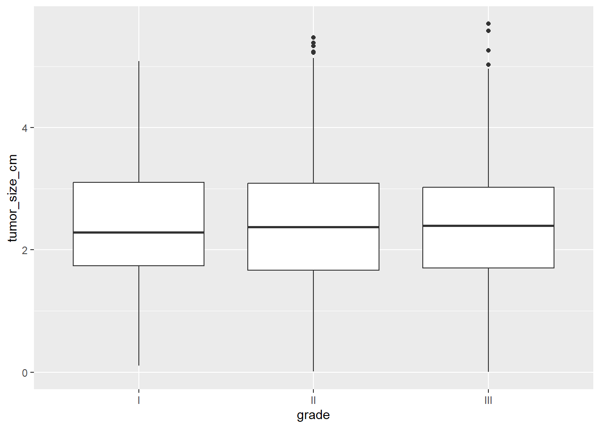
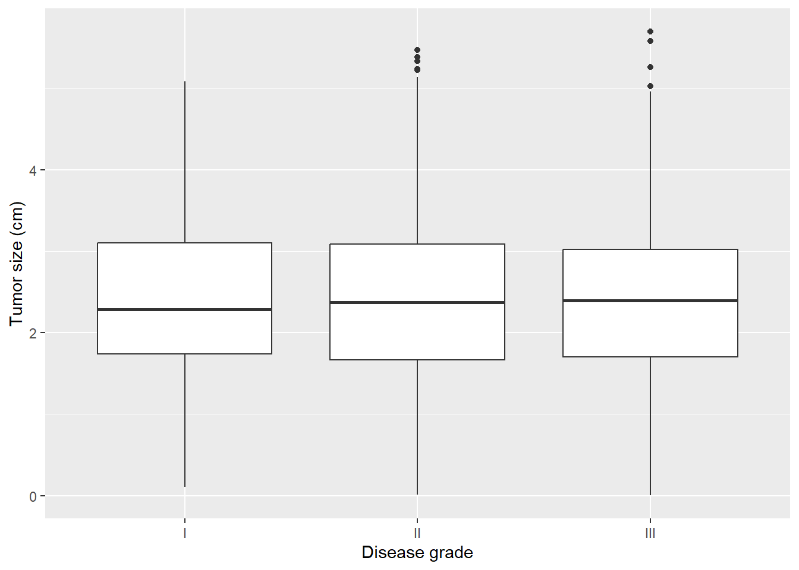
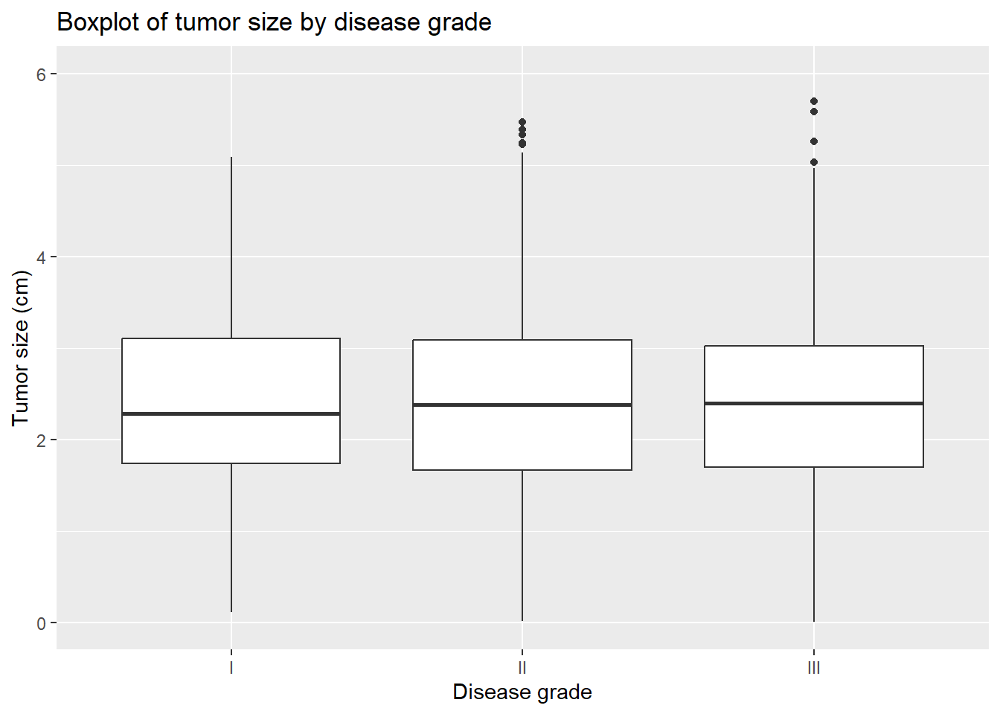

install.packages("ggplot2")Visualization
In this session, we will review the basics of R and generating descriptive statistics in R, which were introduced in the Tools course. Then we will learn about data visualization, including creating scatterplots, bar charts, histograms, line charts, and boxplots. We’ll discuss plot customization, faceting, and saving plots. Both univariate and bivariable plotting will be covered.
Plotting features are available in base R, but a very popular package for plotting in R is the {ggplot2} package, which will be the focus in this course.

library(ggplot2)Scatterplot
Scatterplots display the joint distribution of two continuous variables. For example, what if we wanted to see a plot of “marker” by “age”. Put age on the x-axis and marker on the y-axis.
The first layer of the plot simply specifies the dataset and the basic aesthetics, in this case just the x-axis and y-axis variables:
ggplot(data = mycsv, aes(x = age, y = marker))Then the scatterplot is created by adding a layer with geom_point() using the + operator:
ggplot(data = mycsv, aes(x = age, y = marker)) +
geom_point()
Look for increasing or decreasing trends, or clusters of points.
Line chart
We can also look at the association between two continuous variables using a line chart.
The first layer of the plot specifies the dataset along with the x-axis and y-axis variables:
ggplot(data = mycsv, aes(x = age, y = marker))Then the line chart is created by adding a layer with geom_line() using the + operator.
ggplot(data = mycsv, aes(x = age, y = marker)) +
geom_line()
There is no discernible pattern in this example, but we would look for increasing or decreasing trends in the line.
Bar charts
A bar chart can be used to visualize the distribution of a categorical variable.
The first layer of the plot specifies the dataset and the x-axis variable:
ggplot(data = mycsv, aes(x = grade))Then the bar chart is created by adding a layer with geom_bar() using the + operator:
ggplot(data = mycsv, aes(x = grade)) +
geom_bar()
The height of the bar is the number of observations in that category.
Histogram
It is common to want to describe a continuous variable using a histogram, particularly to examine whether the distribution appears approximately normal.
Let’s look at a histogram of marker. The first layer of the plot simply specifies the dataset and the basic aesthetics, in this case just the x-axis variable:
ggplot(data = mycsv, aes(x = marker))Create the histogram by adding a layer with geom_histogram() using the + operator:
ggplot(data = mycsv, aes(x = marker)) +
geom_histogram()`stat_bin()` using `bins = 30`. Pick better value with `binwidth`.
Note that we received a message along with our output, regarding the number of bins being used in our histogram. This is prompting you to examine whether the default of 30 bins is appropriate for your given sample size and distribution
In this case, we will specify a smaller number of bins for the histogram using the bins = argument to geom_histogram():
ggplot(data = mycsv, aes(x = marker)) +
geom_histogram(bins = 15)We find that the variable “marker” from the trial dataset has a positively skewed distribution.
Boxplot
Boxplots are another common way of examining continuous variables. The continuous variable is on the y-axis, and there is no variable on the x-axis:
ggplot(data = mycsv, aes(y = marker))And the boxplot is created by adding a layer with geom_boxplot() using the + operator:
ggplot(data = mycsv, aes(y = marker)) +
geom_boxplot()
The top and bottom of the box are the 25th and 75th quantiles, the center line is the median, and the whiskers extend to 1.5xIQR.
We may also want to make a boxplot according to a categorical variables. Say we are interested in the distribution of marker according to disease grade. We can add an argument to the x-axis of the first layer aesthetics to get separate boxes by grade:
ggplot(data = mycsv, aes(y = marker, x = grade)) +
geom_boxplot()
Customization
There are many customizations available.
For example, we can change the x-axis and y-axis labels:
ggplot(data = mycsv, aes(y = marker, x = grade)) +
geom_boxplot() +
labs(
x = "Disease grade",
y = "Marker level (ng/mL)"
)
We can add titles:
ggplot(data = mycsv, aes(y = marker, x = grade)) +
geom_boxplot() +
labs(
x = "Disease grade",
y = "Marker level (ng/mL)",
title = "Boxplot of marker level by disease grade"
)
We can set axis limits:
ggplot(data = mycsv, aes(y = marker, x = grade)) +
geom_boxplot() +
labs(
x = "Disease grade",
y = "Marker level (ng/mL)",
title = "Boxplot of marker level by disease grade"
) +
ylim(c(0, 5))And we can change the style of the plot using theme elements:
ggplot(data = mycsv, aes(y = marker, x = grade)) +
geom_boxplot() +
labs(
x = "Disease grade",
y = "Marker level (ng/mL)",
title = "Boxplot of marker level by disease grade"
) +
ylim(c(0, 5)) +
theme_bw()
There are many other customizations available, see the ggplot2 website for details and for a helpful cheatsheet of plotting options.
Faceting
What if it was of interest to see the distribution of marker according to disease grade?
Add a layer to our histogram using facet_grid() to get panels for each level of the disease grade variable “grade”.
Note that by default the y-axis and x-axis limits are fixed across all plots, so we can directly compare the distributions. It is possible to control this with the scales argument to facet_grid(), see ?facet_grid for details.
ggplot(data = mycsv, aes(x = marker)) +
geom_histogram(bins = 10) +
facet_grid(cols = vars(grade))Saving plots
We will often want to save plots to an external file to insert into a later document. There are several options:
Use the interactive plot window to export your created plot.
Use code to save your plot to an external location. There is a function called
ggsave()specifically for saving results ofggplot(). By default it will save the last created plot, or you can save your plot to an object and specify it directly using theplotargument toggsave(). You will specify the file format by including an extension, here “.png” on your filename. ]
Interactive saving options
Create your plot. Click on “Export” then select the option… 1. “Copy to Clipboard”. This will open a pop-up window where you could rescale the plot, if desired, and then click “Copy Plot” to copy the plot to your clipboard so that you can paste it into any external document. 2. “Save as Image…”. Here you can change the directory location where you want to save the plot to the same location where you have your code and data files for this class saved so far. You can select from a variety of file formats. Save it as “my-histogram” in PNG format. You can then insert this file into other documents as needed. 3. “Save as PDF…” and follow the same instructions as in B to save a .pdf version of your image.
Save to file with the ggsave() function
p <- ggplot(data = mycsv, aes(y = marker)) +
geom_boxplot() +
facet_grid(cols = vars(grade))
ggsave(filename = "H:/MMED/MMED501/plots/my-boxplot.png", plot = p)Adjust the width and height using the width and/or height arguments to the ggsave() function